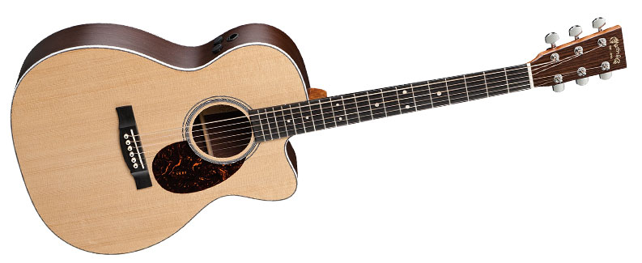
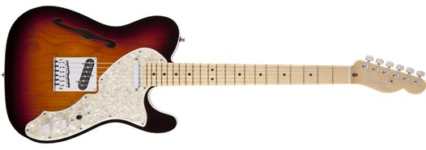

Guitars
Click on guitar images for specs
These guitars I use for gigging as well as studio work
These are what makes my sound....my sound.
|
Taylor 310 CE
This is my main acoustic that I use for acoustic sets. The sound is bright but the body helps create big sound. |

|
| Martin OMCPA4
This acoustic is actually our lead singers acoustic. I've used it to record a couple of songs on our album. The sound is great, but the feel of it is awesome. |
 |
| Fender '72 Telecaster MIM Thinline
This tele is the main one that I use for majority of the songs. It's so versatile in what it can do, from rock to blues. |
 |
| Gibson Les Paul Traditional
This Les Paul is a beast! Running this on full blast is the best thing ever. The sound is amazing and carries like no other. |

|
| Fender American Statocaster
This one is awesome for solos. The single coils sound amazing and really cut through the mix. |